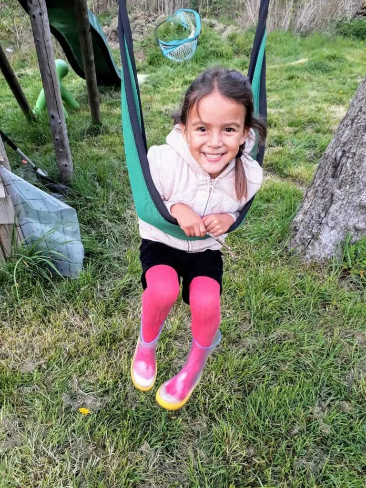

Una educación emocional, una educación significativa, revela lo oculto que hay en cada ser, lo que la existencia ha puesto como un tesoro, y así poder descubrirlo, revelarlo, hacerlo luminoso.
Pensar acerca de lo que se siente, lo que se piensa y de la conducta de otros/as, nos permite preparar nuestro equipamiento interno para caminar la vida. El reflexionar es la puerta de entrada hacia la construcción de estrategias para guiar la propia conducta. Pero para generar esta capacidad reflexiva es necesaria la presencia acogedora de un adulto significativo, quien es responsable de mostrar los caminos del corazón.
El susurrarles sensible y honestamente para que exploren sus mundos internos, les permite florecer, crecer, expandirse y comprender que son y serán sus propios maestros. El mundo emocional es preciso valorarlo y resignificarlo con cada respiración, ya que de esa manera podemos confiar que se forjará una existencia como en los sueños y utopías se esboza.
Un grande nos inspira: “Ocúpate del reino del corazón y lo demás llegará” Claudio Naranjo.
Una educación responsable en lo emocional, cultiva la autorregulación. Este proceso de modulación nos entrega su poder de la armonía emocional, el cual nos empodera para enfrentar creativamente las dificultades de la vida.
Yoga y Educación Emocional
El yoga es para darnos riqueza interior, nos ayuda a armonizar con todo aquello transcendental, instaurando rutinas y hábitos saludables. Tenemos una gran responsabilidad con nuestra infancia y es la de restablecer la seguridad emocional, siendo el yoga una poderosa herramienta de colaboración para el desarrollo integral de nuestros niños y niñas. Toda acción hacia nuestra infancia debiera tener como eje central el amor, estímulos afectivos que nutran dicha armonía emocional, para así brindarles la posibilidad de tomar consciencia de sí mismos y del universo.
¿Cómo conquistar aquella capacidad de autorregulación en nuestros niños y niñas?
-
Aceptando desde el corazón y tolerando sus particularidades.
Ejemplo: Si le das la opción de que elija su ropa al momento de vestirse, no querer cambiar su decisión sólo porque a ti no te parece. El niño/a ha elegido una polera de cierto color y eso debe ser respetado. -
Respetando sus características biopsicosociales.
Ejemplo: Cada niño/a tiene sus propios ritmos. Puede que un niño tenga 5 años y aún no reconozca todas las letras del alfabeto y su compañero de clase sí. El respetar sus ritmos, implica aceptar que sus maneras de aprender son diferentes, debido a sus características biopsicosociales. -
Escuchando sus necesidades, cuestionamientos, opiniones.
Ejemplo: Preguntar constantemente sobre sus gustos e intereses. A qué le gusta jugar, cuáles son sus alimentos preferidos, con qué cosas se pone feliz, qué cosas lo hacen sentirse triste, etc. -
Valorando sus propuestas, sus ideas.
Ejemplo: Si estás guiando un juego donde tu propones una consigna, dar el espacio para que ellos también lo puedan hacer. -
Validando TODAS sus emociones, sin reprimir ninguna. La pena, la rabia también son necesarias.
Ejemplo: Explicar que la rabia y la pena son parte de nuestro mundo emocional. Así como existe el sol y la luna, el día y la noche, lo frío y o caliente, también hay días que podemos estar felices, tristes, tener rabia, etc. -
Acompañarlos en las situaciones adversas, colaborando en el reconocimiento y gestión de la emoción.
Ejemplo: Permitirles que expresen aquella emoción, realizando actos de contención, tales como entregar un abrazo, buscar contacto visual, invitarlo a respirar, abriendo un diálogo con frases como; tranquilo estoy aquí, ¿qué sientes?, ¿Te puedo ayudar?, ¿Busquemos juntos una solución?. -
Fomentando un diálogo democrático.
Ejemplo: Si la niña ha cometido un error (dar vuelta un vaso con agua intencionalmente sobre la mesa), no caer en sólo explicar que eso no se debe hacer, sino más bien buscar conocer sus intenciones de la acción y la reflexión de ello. Esto puede hacerse mediante consignas como; ¿Sabes lo que acaba de suceder?, ¿ Porqué hiciste eso? ¿Para qué lo hiciste?. -
Promoviendo la Empatía, clave para abandonar el egocentrismo.
Ejemplo: Tomando la misma acción anterior del vaso de agua, promover la empatía, reflexionando sobre el hecho que tú ya habías limpiado y ordenado el lugar, que su acción tiene consecuencias en el otro/a. ¿Cómo te sentirías tú, si lo hubiese hecho yo? -
Mostrando el error, el fracaso como fuente de aprendizaje
Ejemplo: Están en una plaza de juegos y ella/él quiere trepar unos circuitos, lo intenta por primera vez y cae al suelo. Debido a este error se niega a intentarlo nuevamente. En esta situación se sugiere entregar consignas tales como; vamos inténtalo de nuevo, para aprender algo hay que equivocarse, cuando yo aprendí a trepar circuitos también me caí varias veces, el caerte te va ayudar a estar más atento ahora, etc.
Bibliografía recomendada
Para adultos/as
- Educar las emociones, Educar para la vida. Amanda Céspedes.
- Esos locos bajitos. Amanda Céspedes.
- A.M.A.R Hacia un cuidado respetuoso de apego en la infancia. Felipe Lecannelier.
- Apego Seguro. Andrea Cardemil.
- Infancia, la edad sagrada. Evania Reichert.
Para niños, niñas y adultos/as.
- ¿Cómo te sientes? Anthony Browni
- Emocionario. Cristina Nuñez, Rafael Romero.
- La cola de dragón. Mireia Canals, Sandra Aguilar.
- Cosquillas para el corazón. Ester Llorens, Mercé Conangla, Jaume Soler.
- Un bosque tranquilo.Patricia Díaz
- Burbujas de Paz. Sylvia Comas
Peggysue.S.S